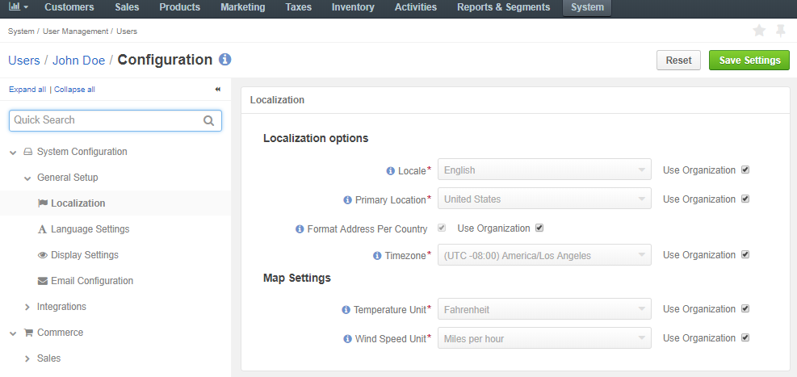
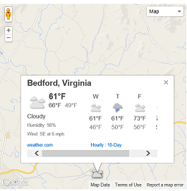

To define the custom localization options for the particular user:
Navigate to System > User management > Users in the main menu.
For the necessary user, hover over the More Options menu to the right and click to start editing the configuration.
Select System Configuration > General Setup > Localization in the menu to the left.
Note
For faster navigation between the configuration menu sections, use Quick Search.
The following page opens:
Here, you can configure the following options by clearing the Use Organization check box and providing your own data:
| Option | Description | Default |
|---|---|---|
| Locale | Affects formatting of numbers, addresses, names, and dates. | English |
| Primary Location and Format Address Per Country | Define the address formatting to be applied. If Format Address Per Country is enabled and the country-specific formatting is enabled for the instance, the address will be displayed in compliance with the rules specified for the country. For example, if the chosen country is China, the address will be displayed as follows: ZIP code Country State, City Street First and Last name whereas, for the US it will be: First and Last name Street name CITY NAME, STATE CODE, COUNTRY, ZIP code Otherwise, the Primary Location formatting will be applied. |
US |
| Timezone | Defines the timezone to be applied for all the time settings defined in the instance. If the time-zone is changed, all the time settings (e.g. due dates of tasks), time of reminders, etc. will be changed correspondingly. | (UTC -08:00) America/Los Angeles |
In the Map Settings, select the Temperature Unit and Wind Speed Unit to display the weather on the map. The default values are Fahrenheit and miles per hour (MPH).
Click Save to the save the settings.